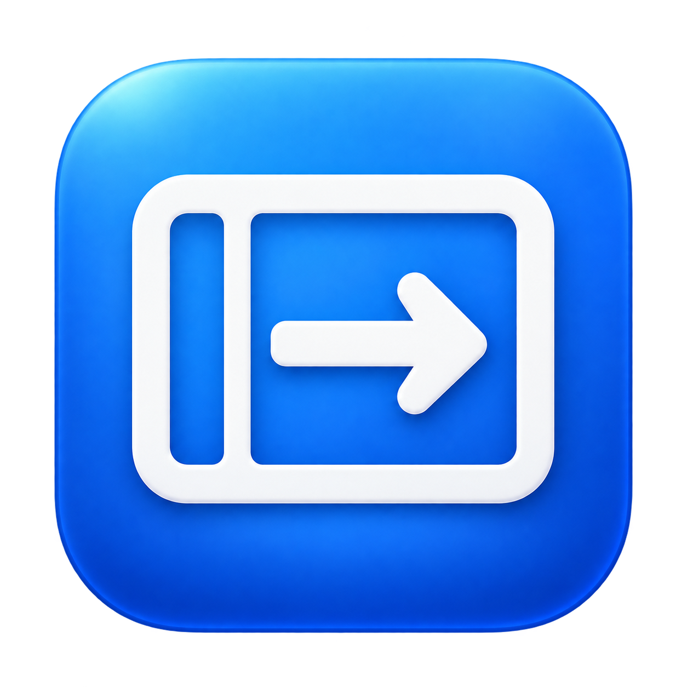

<!doctype html>
<html lang="zh-CN"><meta charset="utf-8"><title>SideSpace · 图标设计</title>
<style>
*{box-sizing:border-box}body{margin:0;background:#f3f5f8;color:#17212e;font:16px -apple-system,BlinkMacSystemFont,sans-serif;padding:56px}main{max-width:960px;margin:auto}h1{font-size:36px;letter-spacing:-1px;margin:0 0 10px}p{color:#66717e;line-height:1.7}.grid{display:grid;grid-template-columns:1fr 1fr;gap:24px;margin-top:32px}.card{background:white;border-radius:24px;padding:30px}.app{width:100%;display:block}.bar{display:flex;align-items:center;justify-content:flex-end;gap:18px;height:56px;border-radius:12px;padding:0 20px;background:#eef0f3}.bar img{width:30px;height:30px}.dark{background:#242a34;color:white;margin-top:16px}.dark img{filter:invert(1)}.master{width:180px;display:block;margin:25px auto}.label{font-size:13px;color:#6d7785}h2{font-size:18px}@media(max-width:700px){body{padding:24px}.grid{grid-template-columns:1fr}}
</style><main><h1>SideSpace</h1><p>窗口归位，一键跨屏。以左侧留白与右移箭头构成统一的视觉符号。</p><div class="grid"><section class="card"><h2>应用图标</h2></section><section class="card"><h2>菜单栏图标</h2><div class="bar"><span>周日 09:41</span></div><div class="bar dark"><span>周日 09:41</span></div><p class="label">透明底单色母版 · 深色预览使用 CSS 反白<br>示意预览，未完成真实菜单栏像素对齐与真机验收。</p></section></div></main></html>
